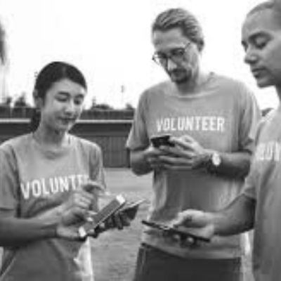

Oficinas de Leitura
Voluntários leem e organizam rodas de leitura para crianças.
Quero participarVoluntários leem e organizam rodas de leitura para crianças.
Quero participarDistribuição de kits escolares e livros.
Quero participar
Atendimento imediato para famílias em situação crítica.
Quero participarJunte-se a nós! Inscreva-se para participar de nossos projetos.
 Quero ser voluntário